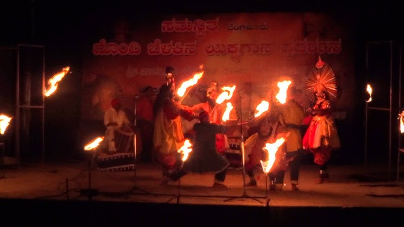

ಯಕ್ಷಗಾನದಲ್ಲಿ "ದೊಂದಿ ಬೆಳಕು" ಎಂದರೆ ದೀಪ (ತೆಳ್ಳಗಿನ ದೀಪ/ಚಿರಾಗು). ಇದು ಯಕ್ಷಗಾನ ಮೇಳದ ಪ್ರಮುಖ ಅಂಗಗಳಲ್ಲಿ ಒಂದಾಗಿದೆ. ದೀಪವನ್ನು ಬೆಳಗಿಸಿ ದೇವರನ್ನು ಪ್ರಾರ್ಥಿಸುವುದರೊಂದಿಗೆ ಮೇಳದ ಆರಂಭವಾಗುತ್ತದೆ.
ಸಾಮಾನ್ಯವಾಗಿ ಪಿತ್ತಳದ ದೀಪ ಅಥವಾ ತಾಮ್ರದ ದೀಪ ಬಳಸುತ್ತಾರೆ. ಅದನ್ನು ಮೆಟ್ಟಲಿನಲ್ಲಿ (ಬೀರುದಂಡ/ದೊಂಡಿ) ಮೇಲೆ ಇಡುತ್ತಾರೆ. ಅದಕ್ಕೆ "ದೊಂದಿ ಬೆಳಕು" ಎಂದು ಕರೆಯಲಾಗುತ್ತದೆ. ಕೆಲವೊಮ್ಮೆ ತೆಂಗಿನ ಎಣ್ಣೆ ಅಥವಾ ಎಳ್ಳಿನ ಎಣ್ಣೆಯಿಂದ ದೀಪ ಹಚ್ಚಲಾಗುತ್ತದೆ.
ದೀಪದ ಸುತ್ತ ಕಲಾವಿದರು ದೇವರನ್ನು ಪ್ರಾರ್ಥಿಸಲಿದ್ದಾರೆ. ಇದರಿಂದ ಕಲೆಯ ಗೌರವ ಕಾಪಾಡಲಾಗುತ್ತದೆ. ದೀಪವು ಮೇಳದ ಕೇಂದ್ರ ಬಿಂದುಯಾಗಿ ಪೂರ್ಣ ಯಕ್ಷಗಾನದಲ್ಲಿ ಇರುತ್ತದೆ.
👉 ಸರಳವಾಗಿ ಹೇಳುವುದಾದರೆ: “ದೊಂದಿ ಬೆಳಕಿನ ಯಕ್ಷಗಾನ” ಎಂದರೆ ದೀಪವನ್ನು ಕೇಂದ್ರವಾಗಿ ಇಟ್ಟುಕೊಂಡು ಆರಂಭವಾಗುವ ಪರಂಪರೆಯ ಯಕ್ಷಗಾನ ಪ್ರದರ್ಶನ.